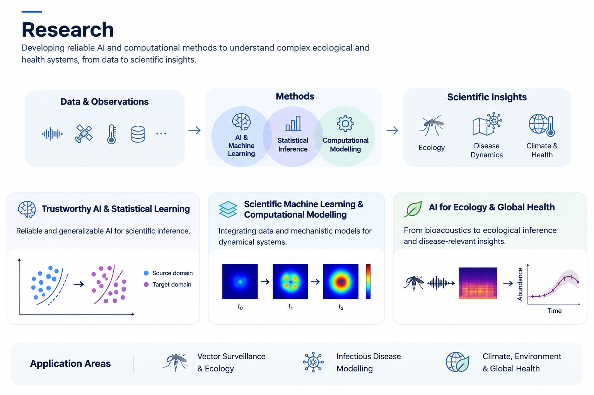

My research focuses on AI for Science, integrating artificial intelligence, statistical inference, and computational modelling to understand complex scientific systems.
I aim to develop reliable, uncertainty-aware, and scientifically meaningful methods, with applications in computational ecology, infectious disease dynamics, and global health.

Developing reliable machine learning and statistical methods for scientific inference under uncertainty, distribution shifts, and heterogeneous data.
Focus: Domain Generalization · Bayesian Inference · Uncertainty Quantification · Model Calibration
Integrating data-driven learning, mathematical models, and statistical inference to understand and predict complex dynamical systems.
Focus: Neural Operators · Physics-Informed Learning · Stochastic Modelling · Data Assimilation
Applying AI and statistical methods to ecological monitoring, biodiversity inference, and climate-sensitive infectious diseases.
Focus: Bioacoustics · Ecological Inference · Infectious Disease Dynamics · Climate & Health
Metadata Shortcut Learning in Mosquito Acoustic Classification
Trustworthy AI · Domain Generalization
Investigating the effects of metadata dependencies on model robustness and cross-domain generalization.
Uncertainty-Aware Ecological Inference from Acoustic Monitoring
Bayesian Statistics · Computational Ecology
Developing statistical approaches to account for imperfect detection and classification uncertainty in ecological monitoring.
Scientific Machine Learning for Infectious Disease Dynamics
Neural Operators · Mathematical Modelling
Exploring the integration of machine learning and mechanistic models for infectious disease dynamics.
AI-Enabled Mosquito Surveillance and Global Health
Artificial Intelligence · Ecological Surveillance
Connecting acoustic monitoring with ecological indicators and potential applications in disease surveillance.
I welcome interdisciplinary collaborations in AI, statistics, applied mathematics, ecology, and global health.
Feel free to contact me to discuss research ideas, collaborations, or student projects.